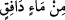
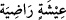
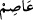
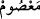
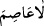
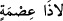
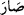
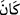

“ __WORD__ (atılan bir sudan)” (et-Târık, 86/6) âyeti ile “ __WORD__ (hoşnut olunan
bir yaşayış)” (el-Kâria, 101/7) âyetinde olduğu gibi “__WORD__ kelimesinin, “__WORD__ (korunan)” mânâsında olduğu da söylenmiştir. Yâni, “Allah’ın azabından ancak O’nun
merhamet ettiği korunur” demektir.
“__WORD__” ifadesinin, “__WORD__ =ısmet sahibi kimse yoktur” mânâsında olduğu da
söylenmiştir. “İsmet sâhibi”, “âsım/koruyan” için de “ma‘sûm/korunan” için de
kullanılır. Burada kastedilen ise “ma‘sûm/korunan” mânâsıdır.
“Aralarına” yani Nuh ile oğlu arasına “dalga girdi” aralarındaki karşılıklı konuşma
son buldu “böylece o da boğulanlardan” su ile helak edilenlerden “oldu.”
Bu ifade, öteki kâfirlerin de helak edildiklerine ve bu helâkin açıklamaya ihtiyaç
duymayan, vukûu kesin bir şey olduğuna en beliğ şekilde delâlet etmektedir. “__WORD__”
yerine “__WORD__”nin kullanılmış olması da oğlunun boğulan kâfirlerden biri olduğunu daha
güzel bir şekilde ifade etmektedir.
Mesnevî’de şöyle denilir:
Bu bahse girersen yüzmeye girişen Ken’an’a benzersin
Düşman olan Nuh’un gemisine binmem diye
Hz. Nûh; “Ey oğul, gel! Babanın gemisine bin,
Tûfan dalgalarından kurtul, boğulma, ey aşağılık” demişti.
Oğlu Kenan; “Hayır!” dedi, “Ben yüzmeyi öğrendim,
Senin mumundan başka bir mum yaktım!”
Nûh (a.s.); “Kendine gel, buna belâ tûfanının dalgası derler
Bugün yüzme bilenin eli ayağı bir işe yaramaz!” dedi.
Bugün, Allah’ın kahır rüzgârı esmektedir.
Hak dininden başka dinin inanç mumunu söndürür!
Kenan: “Ben senin gemine girmem! Şu yüksek dağa çıkarım;
O dağ, her zarardan beni korur!” dedi.
Nûh: “Yapma evlâdım! Bu zamanda o dağ, bir saman çöpüdür.
Allah bugün, dostlarından başkasına aman vermez!” dedi.
Kenan: “Ben ne zaman senin nasîhatini dinledim de
Sen, benim, senin dininden olduğumu sanıyorsun?
Senin sözlerin asla bana hoş gelmemiştir.
Ben iki dünyada da senden ayrıyım, uzağım!” dedi.
Senin bu soğuk sözlerin benim kulağıma hiç girmez.
Çünkü büyüdüm, bilgi sâhibi oldum.
Nûh (a.s.): “Evlâdım, ne zarar edersin
Bir defa olsun babanın öğüdünü dinlesen?” dedi.
Baba, böylece güzel, tatlı öğütler veriyordu.
Oğlu da ağır, sert, terbiyesizce karşılık veriyordu.